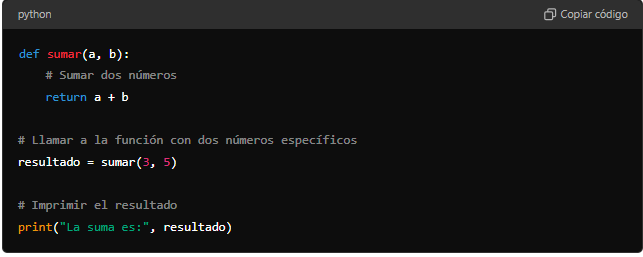

CONCEPTOS TEÓRICOS
PARÁMETROS
Son variables que se pasan a una función para que esta pueda trabajar con diferentes valores. Se definen dentro de los paréntesis de la definición de la función.
-
Definición de la Función:
def saludar(nombre):- La palabra clave
defse usa para definir una nueva función en Python. saludares el nombre de la función. Este nombre se usa para identificar y llamar a la función más tarde.nombrees un parámetro de la función. Este parámetro actúa como una variable que acepta un valor cuando se llama a la función.
- La palabra clave
- Cuerpo de la Función:
print("¡Hola, " + nombre + "!")
- Esta línea de código es el cuerpo de la función y se ejecuta cada vez que se llama a la función
saludar. printes una función integrada en Python que imprime el mensaje especificado en la pantalla."¡Hola, " + nombre + "!"es una expresión que concatena la cadena"¡Hola, "con el valor del parámetronombrey luego con la cadena"!".- Si
nombrees"Juan", la expresión resultante será"¡Hola, Juan!"
Ejemplo de Uso
-
Definir la Función: La función
saludarse define de la misma manera que antes. -
Llamadas a la Función:
saludar("Juan")saludar("María")saludar("Pedro")- Cada una de estas líneas llama a la función
saludarcon un argumento diferente. - La primera llamada pasa el argumento
"Juan", por lo que la función imprimirá"¡Hola, Juan!". - La segunda llamada pasa el argumento
"María", por lo que la función imprimirá"¡Hola, María!". - La tercera llamada pasa el argumento
"Pedro", por lo que la función imprimirá"¡Hola, Pedro!".
- Cada una de estas líneas llama a la función
Interactividad con input
Si deseas que el usuario introduzca el nombre a través de la entrada del teclado, puedes usar la función input:
VARIABLES DE RETORNO
Son los valores que una función devuelve después de ejecutar su código. Se utilizan la palabra clave return.

Paso 1: Definir una función para sumar dos números
def sumar(a, b):
return a + b
def sumar(a, b):define una función llamadasumarque toma dos argumentosayb.- La función realiza la suma de
ayby devuelve el resultado conreturn a + b.
Paso 2: Llamar a la función con dos números específicos
resultado = sumar(3, 5)
sumar(3, 5)llama a la funciónsumarpasando los valores3y5como argumentos.- La función
sumarcalcula3 + 5y devuelve8. - El valor devuelto
8se almacena en la variableresultado.
Paso 3: Imprimir el resultado de la suma
print("La suma es:", resultado)
print("La suma es:", resultado)usa la funciónprintpara mostrar el mensaje"La suma es:"seguido del valor de la variableresultado.- En este caso,
resultadocontiene el valor8, por lo que el mensaje completo que se imprimirá es"La suma es: 8".
Funcionamiento
-
Definir la función:
- La función
sumartoma dos argumentos,ayb, y devuelve su suma.
- La función
-
Llamar a la función con dos números:
- La función se llama con los números
3y5. - La función calcula
3 + 5y devuelve8.
- La función se llama con los números
-
Imprimir el resultado:
- El programa imprime el resultado de la suma, que es
8.
- El programa imprime el resultado de la suma, que es
Resultado Esperado
Cuando ejecutes el programa, deberías ver algo similar a esto en la pantalla:
La suma es: 8
Consejos
- Asegúrate de que los números pasados a la función sean del tipo adecuado (en este caso, enteros o flotantes).
- Usa la función
printpara mostrar el mensaje de manera clara y legible. - Revisa tu código para asegurarte de que no haya errores de sintaxis y que la función esté correctamente definida.
¡Diviértete programando y aprendiendo a usar funciones y la función print en Python!
VARIABLES LOCALES
Son las que se definen dentro de una función y solo pueden ser usadas dentro de esa función.